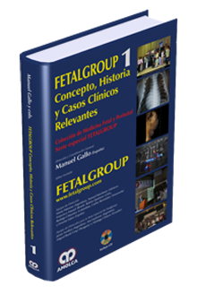

Curriculum vitae
Titulos:
- Medico: expedido por la Faculad de Ciencias Médicas de la
Universidad Nacional de la Plata el dia 28 de julio de 1969.
- Especialista es obstetricia: otorgado por el Colegio Medico
de la Provincia de Buenos Aires, Distrito IX, 25 de septiembre de
1972.
- Medico ecografista: Otorgado por la Confederacion Medica de
la Republica Argentina el 4 de mayo de 1981.
- Radiologo: radiodiagnóstico: otorgado por el Ministerio de
Salud y Acción Social, Subsecretaría de Regulación y Control, el 19
de diciembre de 1988.
Antiguedad:
- Egresado de la Facultad de Ciencias Médicas de la Universidad
Nacional de la Plata, el 19 de diciembre de 1968.
- Ayudante alumno de la Catedra de Anatomía Patológica del
Instituto General San Martín de la Plata a cargo del Dr. Luis
Pianzola del año 1966 a 1968.
- Practicante mayor y menor por concurso del Hospital de
Cirugía de Haedo, en los años 1967 y 1968 respectivamente.
- Médico concurrente al Servicio de Genecología y Obstetricia
del Hospital Interzonal General Mar del Plata del 30 de julio de 1969
a marzo de 1979.
- Médico de Guardia de Obstetricia rentado por concurso de
marzo de 1979 a marzo de 1980.
- Médico concurrente al Servicio de Radiología del Hospital
Interzonal General. Asistente desde enero de 1981 hasta enero de
1983, donde se lo designa médico concurrente (resolución 14783 ).
- Concurrente al Servicio de Radiología de la Clínica Privada
Puirredón desde junio de 1983 a marzo de 1988.
- Concurrente al Centro de Diagnóstico Sección Tomografía
Computada para cuerpo entero durante a 6 meses.
- Médico Ecografista del Hospital Interzonal Central de Mar del
Plata desde enero de 1980 a noviembre de 1988.
- Presidente de la Sociedad Marplatence de Ecografistas.
Congresos y Jornadas:
Extranjero:
- Médico invitado “Instituto Dexeus” Servicio diagnóstico por
Imágenes, Barcelona-España, septiembre de 1984.
- Médico invitado al Servicio de Ecotomografía Dr. Jorge Moll.
Rio de Janeiro-Brasil. Enero 1986.
Argentina:
- “XIII Jornada Argentina de Radiología y IX Jornada
Rioplatense(Mar del Plata, dic. De 1980)” de radiologia presentando
el trabajo “Ecografía y Cirugía de Vías Biliares”.
- 18-5-81 al 20-5-81, Asistente al Curso de RX y Eco en
Obstetricia y Ginecología (Hospital Privado de la Comunidad).
- 8 al 12 dic. De 1984. Asistente al V Congreso de Diagnóstico
por Imágenes del Hospital Privado de la Comunidad.
- Dic. 1985 Asistente al VI Curso de Diagnóstico por Imágenes
del Hospital Privado de la Comunidad (más de 50 horas. Con evaluación
final).
- 29-9-82 al 2-10-82 Asistente de Jornadas de Actualización en
Diagnóstico por Imágenes. Auditorías Mar del Plata.
- Junio de 1984 Simposio Internacional de Aplicaciones de la
Ecografía Tocoginecológica Rosario Argentina).
- 18-1 al 21 de junio de 1980: Reunión Extraordinaria
Internacional de Tocoginecología XV-A Aniversario. Presentó Trabajo
“Edad Gestacional Ecog
ráfica. Estudio comparativo- Nuestra
experiencia”
- 1969- Primeras Jornadas Marplatenses de Obstetricia y
Ginecología , org. por la Sociedad de Obstetricia y Ginecología de
Mar del Plata. Dic, 1
969.
- 1971: Curso de Actualización Ginecológica. Octubre de 1971.
- 1973: Terceras Jornadas Marplatenses de Obstetricia y
Ginecología presentando trabajo de Anestesia Penidural en la Soc. De
Obstetricia y Gine
cología de Mar del Plata.
- XV Congreso Argentino de Obstetricia y Ginecología. Rosario
1976 panelista.
- 1974-: Presentando trabajo en la Sociedad Argentina de
Obstetricia y Ginecología de Mar del Plata ( “Test de Artz y
Bogossian en Ginecología”
Mar del Plata, dic. 1974.
- Quintas Jornadas Marplatenses de Obstetricia y Ginecología,
Mar del Plata dic. 1978. Presentando trabajo “Registo gráfico de
trabajo de parto
y anestesia peridural. Nuestra experiencia”.
- Curso Internacinal de perfeccionamiento ( 27 hs cátedra ) en
la Sociedad de Obstetricia y Ginecología de Buenos Aires , octubre de
1978.
- Congreso Mundial de Ginecología y Obstetricia TOKIO-JAPON año
1978. Con presentación de trabajo.
- Reunión extraordinaria Internacional de Tocoginecología XV
Aniversario de la Sociedad de Obstetricia y Ginecología , Mar del
Plata, 1980.
- Tercera reunión Científica de la Sociedad de Ginecología y
Obstetricia de Mar del Plata. Panelista, mayo 1980.
- Congreso argentino de cardiología XVI y XIV – Congreso
Sudamericano de Cardiología 5 y 7 de octubre de 1989.
- Minicurso de la Sociedad Argentina de Cardiología “Dopper
Cardíaco Pediátrico y Vascular Periférico, teórico-práctico”, 1989.
- Primer Congreso Argentino de Imagenología Utrasónica. Primer
Congreso de Comité Latinoamericano de Malformaciones Fetales.
Simposio Internacio
nal de Ecodoppler Cardíaco” 21-4-91.
- Primer Curso Intensivo de Actualización de Ecografía General,
Doppler y Doppler Colo – octubre de 1992.
- X Congreso Argentino de Cardiología 23 y 26 de septiembre de
1992.
- XII Congreso Argentino de Radiología – Diagnóstico por
imágenes y Terapia Radiante, octubre 1992.
- II Congreso Argentino de Imagenología Ultrasónica. II
Simposio Internacional de Doppler Color. Agosto de 1993.
Expositor y Panelista:
- Docente del “XX Curso de Actualización en Cirugía General”
agosto de 1986.
- Curso de Ecotomografía tocoginecológica y abdominal ( 53 hs,
Balcarse Argentina).
- Secretario y Expositor en el Congreso Argentino y
Latinoamericano de Ultrasonografía en medicina set. 1983 , Bs As
Argentina.
- Mesa Redonda “Valor de la Ecografía en la Paciente Infértil”.
- Relator: “XIII Jornadas de Cirugía de la provincia de Buenos
Aires”, 1984 Bahía Blanca.
- Relator: Curso Intensivo de Ecotomografía, 1981.
- Relator: “Segundo Simposio de Ecografía”, Asociación Médica
de Tandil.
- Relator: “Primera Reunión Nacional Anual de la Asocialción
Argentina de Ecografía”.
Panelista:
- Mesa Redonda: “Retraso de Crecimiento Uterino”, 1985.
- Mesa Redonda: “Parámetros de madurez y vitalidad fetal”,
Tercera Reunión Científica de la Sociedad de Obstetricia y
Ginecología de Mar del Plata.
Trabajos Realizados:
- “Leigmioma Gástrico: Diagnóstico por Imágenes”. Presentado en
el Segundo Simposio Nacional de Ecografía Abdominal.
- Evaluación del “Error Diagnóstico en la Ecografía de Abdomen
Superior”. En colaboración, Presentado en la Primera Reunión annual
de la Asociación Argentina de Ecografía ( 8 de diciembre de 1982).
- “Halagos Ecográficos del Engrosamiento de la pared vesicular
en la hepatitis viral”: presentado en el Congreso Argentino y
Latinoamericano de la ultrasonografía en Medicina. ( Cap. Fed. 1983).
- “Estudio Preliminar acerca del enfoque clínico y ecográfico
sobre mioma y embarazo”, presentado el 5-11-86 en la Sociedad de
Obstetricia y Ginecología de Mar del Plata.
- “Evaluación de errores diagnósticos de la ecografía
Ginecológica” , presentado en la Primera Reunión Nacional annual de
la Sociedad Argentina de Ecografía, dic. 1982.
- “Diagnóstico de edad gestacional mediante ultrasonido”,
presentado el 3-7-79 en Sociedad de Obstetrica y Ginecología de Mar
del Plata.
- “Ecografía y Cirugía de Vias Biliares”, “Confrontación
Diagnóstica”, presentado en las XXIII Jornadas Argentinas de
Radiología y IX Jornadas Rioplatenses de Radiología, nov. de 1980.
- “Embarazo ectópico, diagnóstico ecográfico”, presentado en
las VI Jornadas Marplatenses de Tocoginecología, nov. 1980.
- “Edad gestacional Ecográfica: Estudio comparativo, nuestra
experiencia” , Reunión Internacional de Tocoginecología. XV
Aniversario Segba. Junio 1980.
- “Metrorragia del 1er. Trimestre. Aspecto ecográfico”,
presentado en las VI Jornadas Marplatenses de Obstetricia y
Ginecología, dic. 1980.
- “Efectos Biológicos del U.S. Diagnóstico”.
Otros Cursos y Congresos:
- Buenos Aires, 28 de agosto de 1993 – 2do Congreso Argentino
de Imagenología Ultrasónica.
- Buenos Aires, 30 de noviembre de 1994 – 6to Simposio
Internacional de Ultrasonografía en Perinatología y Ginecología.
- Buenos Aires, 14 de julio de 1996 – Seminario Internacional
de Actualizació de Untrasonografía y Doppler.
- Buenos Aires , 17 de octubre de 1998 – 1er Simposio
Internacional – Ecografía Tridimensional.
- Buenos Aires, 22 de abril de 1999 – 4to Worl Congress of
Perinatal Medicine.
- Buenos Aires, 09 de noviembre de 2003 – XIV Simposio
Internacional de Ultranosografía en Perinatalogía y Ginecología.
- XXI International Congress of the Society. “The Fetus as
Patient” abril 27-30 2005 , Bs. As. Argentina.
- Xxi International Congress of the Society. “The Fetus as
Patient”. 3D-4D Impact on Fetal Diagnosis. Abril 72-30 2005. Bs. As.
Argentina.
- Simposio Internacional de Ecografía y Medicina Fetal.
Malformaciones del SNC y cardiovasculares de la ecografía a la
cínica. 11-13 noviembre 2005.
- The Fetal Medicine Foundation The 11-13 weeks scan
Certificate of attendence Certificado de Competencia Dr. Nicolaides
13-06 200. London UK.
- The Fetal Medicine Foundation
Certificate of
competence
Mesurement of nuchal translucency
15-08
2009.
- The Fetal Medicine Foundation
Certificate Assestment
Certificate of attendance
Dr. Kipros Nicolaides
137
Harley Street London W1G6B6 UK.
- The Fetal Medicine Foundation
The 20-22 weeks scan
Certificate of attendence
Dr. Kipros Nicolaides
Director
August 17, 2009
- The Fetal Medicine Foundation
Antenatal surveillance
Certificate of attendence
Dr. Kipros Nicolaides
Director
September 29, 2010
- The Fetal Medicine Foundation
Cervical ssessment
Certificate of Competence
Dr. Kipros Nicolaides
Director
May 27, 2010
- The Fetal Medicine Foundation
Fetal echocardiography
Certificate of attendence
Dr. Kipros Nicolaides
Director
Nov 27, 2010
- Sociedad Argentina de Ultranosografía en Medicina y Biología
Curso intensivo monotemático de Ecocardiografía Fetal
Dictado por el profesor Pedro Weissburg
Mar 10, 2011

- Co-autor en el libro "FETALGROUP 1 - Concepto, Historia y
Casos Clínicos Relevantes Colección de Medicina Fetal y Perinatal -
Serie especial Fetalgroup" (ISBN: 978-958-755-069-6), caso clínico
número 19, "Artefactos en Ecografía (masa ocupante en el cerebro fetal) "

- Curso online en ejecución de dos años de duración en la Clinic Barcelona.
Doctor Eduard Gratacos.
- Actualización en medicina materno fetal
- Cardiología fetal avanzada